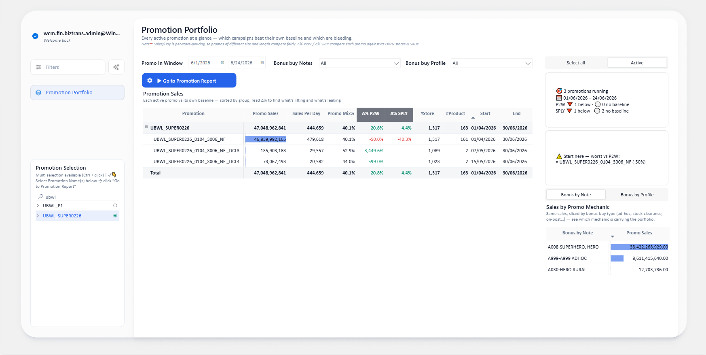
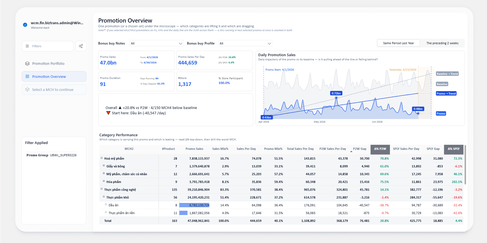
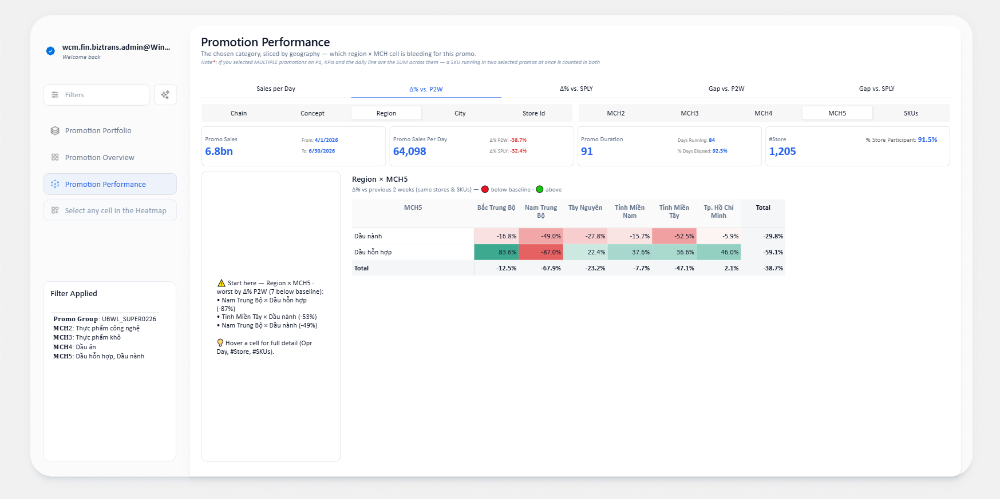
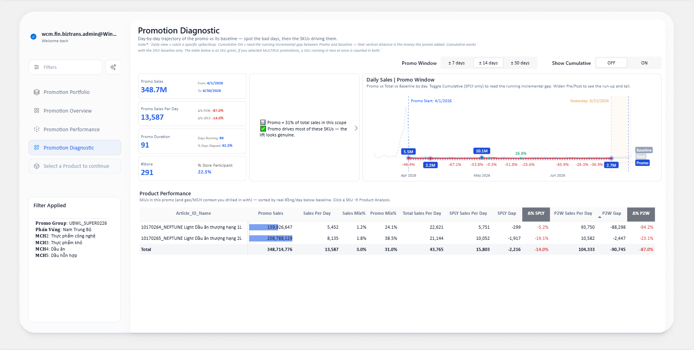
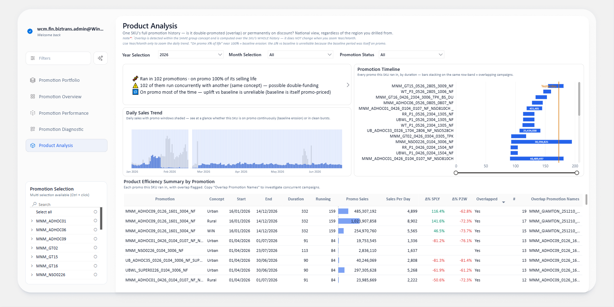

Hướng dẫn cho Category Manager mới: 5 trang báo cáo là một hành trình thu hẹp dần — từ toàn bộ chương trình khuyến mãi (CTKM) xuống tới một SKU. Đi theo câu chuyện của An để biết bấm vào đâu, đọc số nào, và tránh bẫy gì.
Đừng đọc từng trang rời rạc. Báo cáo được thiết kế để bạn bắt đầu từ trang 1 (cái gì đang rỉ máu?), rồi click drill liên tục xuống tận SKU — như lột từng lớp một củ hành.
Trang đầu là bàn cờ tổng: mọi CTKM đang chạy trong một cửa sổ thời gian. Đây là trang điều hướng, không phải để đọc sâu — mục tiêu là chọn nơi để drill.

| Chỉ số | Nghĩa |
|---|---|
| Sales / Day | Doanh thu trên mỗi store, mỗi ngày → so công bằng giữa CTKM 3 ngày và 60 ngày, store nhiều và ít. |
| Δ% P2W | So với 2 tuần trước (cùng store & SKU). Âm = cần điều tra. |
| Δ% SPLY | So với cùng kỳ năm ngoái (cùng store & SKU). Ống kính mùa vụ. |
Giờ chỉ còn một CTKM dưới kính hiển vi. Câu hỏi: nó tốt hay xấu tổng thể, và ngành hàng nào tạo nên điều đó.

Bạn đến đây từ một ngành ở trang 2. Tất cả bên dưới là ngành đó, cho CTKM đã chọn, nhưng bóc theo vùng × ngành con qua một heatmap.

Trang chẩn đoán theo thời gian: đường doanh thu hằng ngày (trên) + bảng từng SKU (dưới).

Trang chốt: một SKU, luôn xem toàn quốc. Hai nhiệm vụ — Finance kiểm tra SKU có bị nhiều CTKM chạy đồng thời (double-funding) không; Commercial kiểm tra SKU có bị khuyến mãi triền miên không.

| Thuật ngữ | Nghĩa |
|---|---|
| Sales / Day | Doanh thu trên mỗi store, mỗi ngày vận hành → so công bằng giữa các CTKM dài/ngắn, rộng/hẹp. |
| Δ% P2W | So với 2 tuần liền trước, cùng store & SKU. Ống kính xu hướng gần. |
| Δ% SPLY | So với cùng kỳ năm ngoái, cùng store & SKU. Ống kính mùa vụ (có thể nhiễu nếu năm ngoái hết hàng). |
| Gap / Day | Chênh lệch Sales/Day so baseline tính bằng đồng thật. Dùng để xếp ưu tiên (thay vì %). |
| Mix vs Share | Mix = phần ngành chiếm trong doanh thu portfolio · Share = ngành bán có hiệu quả không. Hai câu khác nhau. |
| Opr Day | Số ngày store thực sự vận hành trong kỳ. Opr Day thấp → Sales/Day cao ảo. |
| On-promo % | Tỷ lệ ngày SKU đang nằm trong bất kỳ CTKM nào. Cao ≈ "khuyến mãi triền miên". |
| Overlap | SKU chạy nhiều CTKM cùng lúc (cùng store-concept + trùng thời gian). Cờ double-funding cho Finance. |
| Baseline | Mốc so sánh (P2W hoặc SPLY) — Sales/Day "đáng lẽ" nếu không có CTKM. |